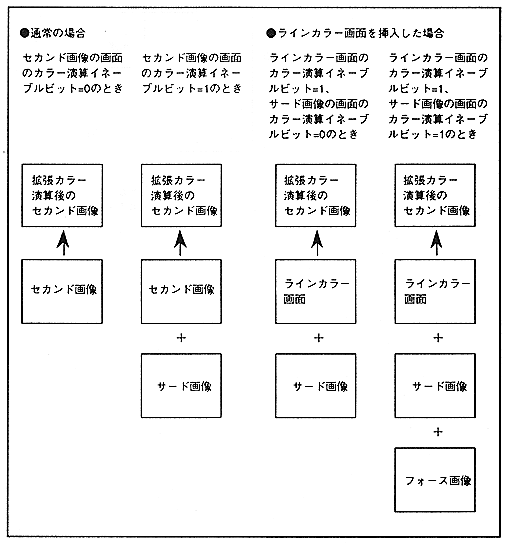

The result of addition at a constant rate is used as the second image data, allowing 4-screen color calculation. However, the extended color calculation function can be used only when the TV screen mode is the normal mode, not when in the high resolution or dedicated monitor mode.
When performing extended color calculation, whether to add the third image and the force image depends on the color calculation enable bit of the third image screen, and whether to add the second image and the third image depends on the color calculation of the second image screen. Follow the enable bit.
The extended color calculation ratio when using the extended color calculation function varies depending on the color RAM mode, the insertion of the line color screen, the color calculation enable bit value of the second image and the third image, the color format, and the color format of the force image.
The extended color calculation function is shown in Figure 12.3 and the extended color calculation ratio is shown in Table 12.2.
Figure 12.3 Extended color calculation function
